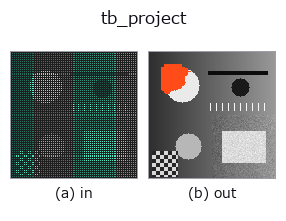

typed op• 資料種類:points → image
• 呼叫:fullseye.apply(img, "tb_project", a=0.5, b=0.5)(2-D 的模型是一張圖 + 兩個純量旋鈕 a,b∈[0,1])

*圖為在 128×128 合成輸入上實際執行的輸出。左為輸入，右為輸出。點雲以俯視散點顯示(亮度 = z)，一維序列為折線，體資料為沿 z 的最大值投影，影片為中間影格，複數影像為振幅；無法成像的回傳值直接顯示數值。*
*旋鈕 a 不改變輸出(實測: 0.1 / 0.5 / 0.9 相同)。*
*旋鈕 b 不改變輸出(實測: 0.1 / 0.5 / 0.9 相同)。*
階段(前置運算子 → 本運算子，由左至右):
▸ tb_project: stages (docs site)
換別的影像(合成場景 / 照片 / 硬幣。上排為輸入，下排為對應輸出。旋鈕取預設):
▸ tb_project: other inputs (docs site)
透過相機 (rvec,t,K) 將 3D 點 (n,3) 投影到 2D (n,2)（透視除法）。
> 以下的詳細說明為原文 —— 摘要與標題已翻譯。
`X_cam = R(rvec) @ X + t、x = K @ X_cam、uv = x[:2] / x[2]` を全点まとめて計算する
(`project_points と同じ規約)。rvec` は回転ベクトル(軸 × 角 [rad]、scipy の
`Rotation.from_rotvec)、t は (3,) 並進、K` は (3,3) 内部行列。返り値は (n,2) float で
列 0 が u(横・列方向)、列 1 が v(縦・行方向)、単位は K に従いピクセル。
注意(検証なし): カメラ後方や像平面上の点(`Z_cam <= 0`)を弾かず、そのまま除算する。
`Z_cam = 0` は 0 割で inf/NaN、負の Z は画像内に見える偽の座標になるので、可視性の判定は
呼び出し側で行う。形状の検証もしない(`np.asarray` で float 化するのみ)。
`bundle_adjust / mean_reprojection_error` の再投影残差はこの関数で作られる。
2-D 進化レジストリへ橋渡しした 3d の op `project。実装は同じで、呼び出し規約だけ op(v, a, b) に合わせてある。この op に調整点は無く、a も b` も使われない。
• 範例資料目錄(下載 URL / 授權) —— 2-D 用 skimage.data(BSD/公有領域)加合成圖,3-D 給出真實資料源(Stanford/PDS 等)的下載 URL。
• 運算子來歷與參考文獻 —— 該運算子族所依據的研究/方法出處。
下面的程式已確認可以執行(與圖相同的輸入)。在 Studio 說明中，此區塊會變成按鈕，可當場載入並執行。
img_to_points 0.50 0.50 tb_project 0.50 0.50
▸ Load this pipeline · Load & run
下面的範例呼叫的是底層帳本運算子 project。此橋接運算子只是把同一實作適配為 fn(v, a, b) 慣例，行為完全相同(只是呼叫形式不同)。
• bundle_adjust — py -3.11 examples_3d/bundle_adjust.py
image 作為輸入)identity · gaussian · mean_box · bilateral · unsharp · median · min_filter · max_filter
typed)tb_points_to_voxel · tb_estimate_point_normals · tb_iss_keypoints · tb_project_points · tb_render_point_depth · tb_statistical_outlier_removal · tb_radius_outlier_removal · tb_voxel_grid_downsample
*Provenance: ops.py — 2D 運算子登記表。本條目由 tools/opdocs.py md 自動產生(請勿手動編輯)。*
© 2026 Kazufumi Furuse — Fullseye operator documentation. Licensed under Apache-2.0.
{kind=link}
{kind=link}